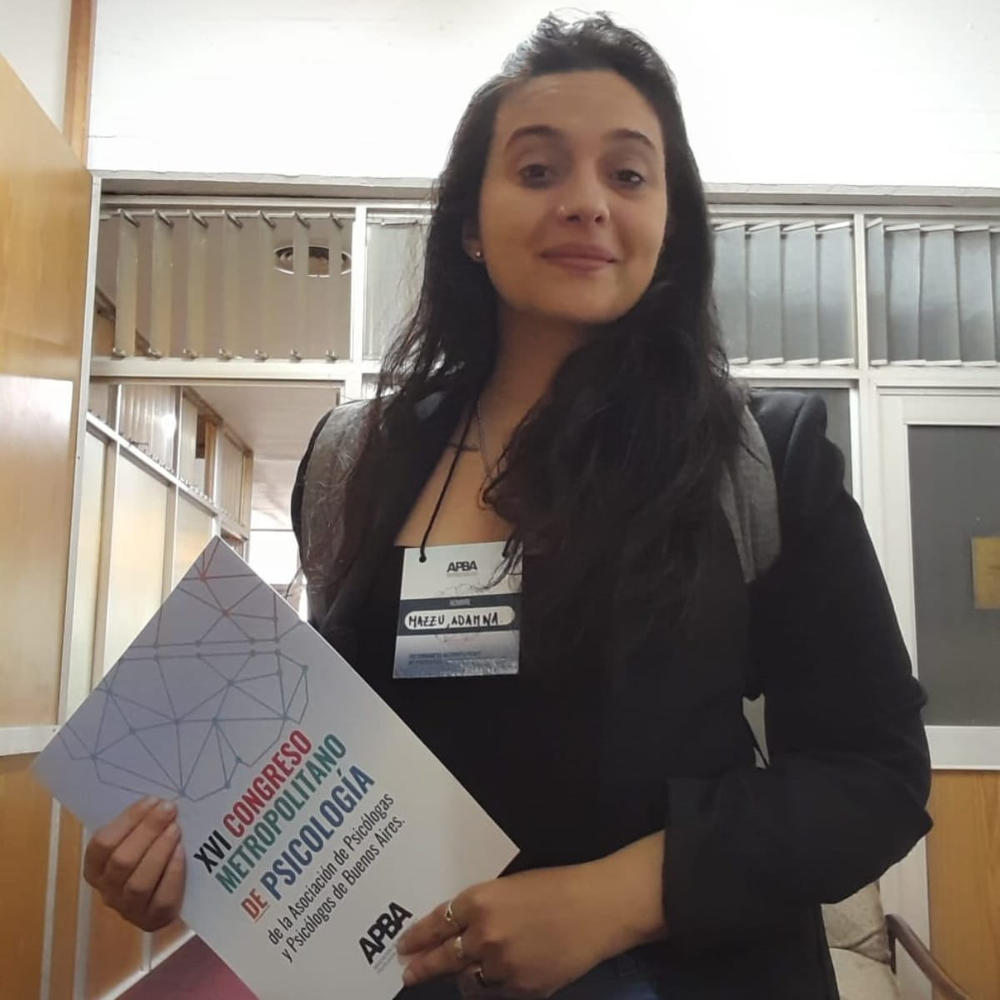

Formación
- Licenciada en Psicología — Universidad Nacional de La Plata
- Profesora de Psicología — UNLP
- Diplomada en Psicología Infantil — Asociación Argentina de Salud Mental
- Candidata a Magíster en Psicología Educacional
Psicóloga infanto-juvenil y de adultos
M.P. 688 | M.N. 82481
Más de 10 años de experiencia en intervenciones en contextos educativos y en problemáticas complejas.
Atención a niños, adolescentes, adultos y familias
Presencial en Río Turbio y La Plata | Online en todo el país




Soy Licenciada en Psicología por la Universidad Nacional de La Plata, con formación y trayectoria en el campo clínico, educativo y comunitario.
Mi trabajo se construye desde una mirada integral de la salud mental, entendiendo que cada persona, familia o institución necesita ser abordada en su contexto, su historia y sus vínculos.
He formado parte de equipos hospitalarios, proyectos de investigación y espacios de intervención en escuelas y comunidades. Actualmente continúo mi formación como candidata a Magíster en Psicología Educacional, profundizando el trabajo en infancia, familia y contextos educativos.
Trabajo desde una combinación de rigurosidad profesional, escucha cercana e intervenciones respetuosas.
Acompañamiento psicológico para:
Intervenciones y evaluaciones en contextos legales, con responsabilidad profesional y rigurosidad técnica.
La articulación con instituciones se realiza desde un posicionamiento clínico, resguardando la singularidad de cada caso y evitando la reducción del trabajo a la mera emisión de informes.
Materiales orientados a familias, docentes e instituciones para el acompañamiento de distintas problemáticas.
Espacios de trabajo en instituciones educativas y comunitarias, orientados a la prevención, la intervención y la construcción de convivencia.

.jpeg)
 “
“
"Excelente profesionalismo y calidez. Me sentí muy cómoda desde la primera sesión...."
 “
“
"Un espacio de mucha contención y ayuda real. Muy recomendable para cualquiera que lo necesite...."
 “
“
"La calidad es increíble y el trato muy amable. 100% recomendado...."
San Martín 678, Rio Turbio, Santa Cruz
VER EN MAPAPedir ayuda no siempre es fácil.
Pero puede ser el primer paso para que
algo empiece a cambiar.
Si estás atravesando una situación que te preocupa, puedo acompañarte.